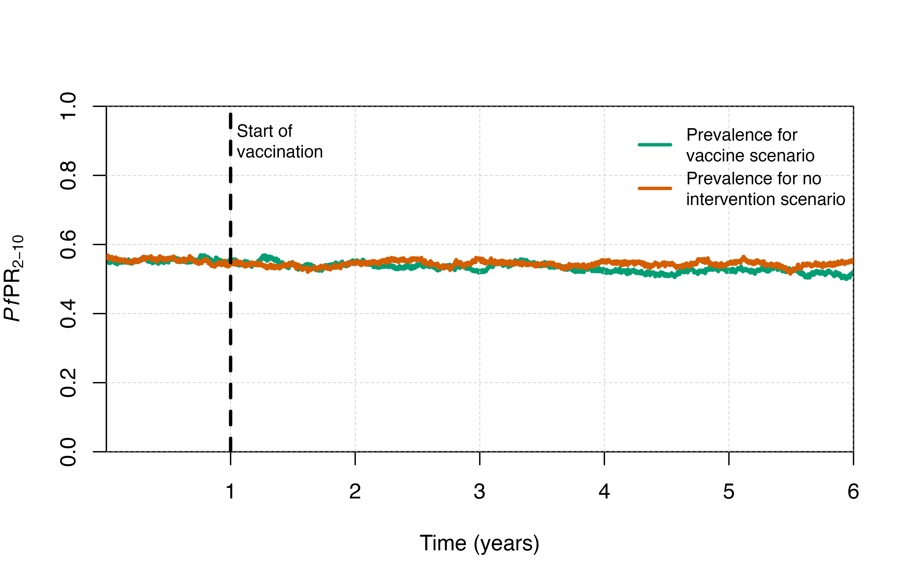
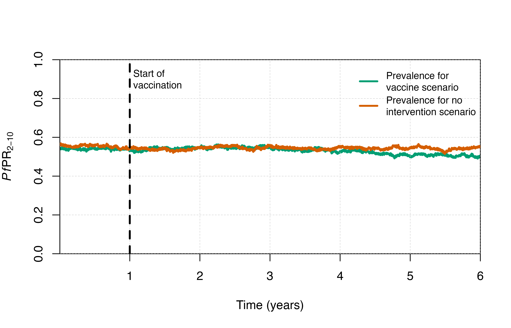
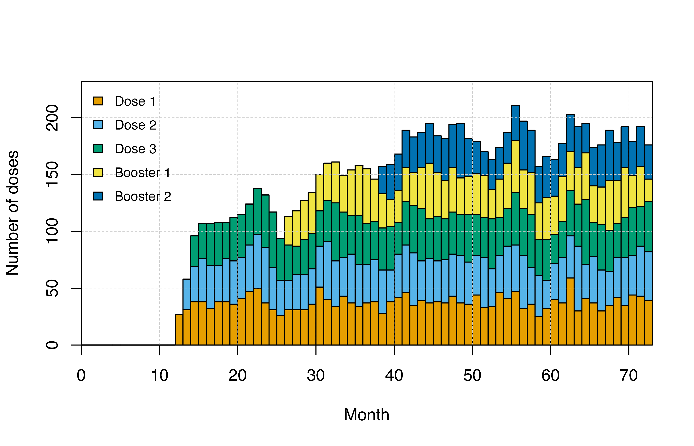

Vaccines
Vaccines.Rmd
# Load the requisite packages:
library(malariasimulation)
# Set colour palette:
cols <- c("#E69F00", "#56B4E9", "#009E73", "#F0E442", "#0072B2", "#D55E00", "#CC79A7")In this vignette, we will explore how to model different strategies
for both pre-erythrocytic malaria vaccines and a theoretical malaria
transmission blocking vaccine (TBV). Parameters for a pre-erythrocytic
vaccine can be set for a routine age-based Expanded Programme on
Immunization (EPI) strategy or a mass vaccination strategy using the
helper functions set_pev_epi() and
set_mass_pev(), while parameters for a TBV can be set using
set_tbv(). Under an EPI strategy, everybody within a
certain age range will be vaccinated within the routine immunisation
system. A mass vaccination strategy is typically a one-time event where
everybody, or everybody within a certain age group, is targeted for
vaccination during a relatively short window of time. If you are
modelling a seasonal setting, then it is also possible to schedule
vaccination relative to the expected peak of malaria prevalence given by
peak_season_offset().
First, we will define a few functions to visualise the outputs.
# Plotting clinical incidence
plot_inci <- function(type = "not seasonal"){
if(type == "seasonal"){
comparison <- output_seas_control
vaccinetime <- round(year + (peak - month * 3.5), 0) / 365
} else {
comparison <- output_control
vaccinetime <- 1
}
output$clinical_incidence <- 1000 * output$n_inc_clinical_0_1825 / output$n_age_0_1825
output$time_year <- output$timestep / year
comparison$clinical_incidence <- 1000 * comparison$n_inc_clinical_0_1825 / comparison$n_age_0_1825
comparison$time_year <- comparison$timestep / year
plot(x = output$time_year, y = output$clinical_incidence,
type = "l", col = cols[2],
xlab = "Time (years)", ylab = "Clinical incidence (per 1000 children aged 0-5)",
ylim = c(0, max(output$clinical_incidence)*1.3),
xaxs = "i", yaxs = "i")
grid(lty = 2, col = "grey80", lwd = 0.5)
abline(v = vaccinetime, col = "black", lty = 2, lwd = 2.5)
text(x = vaccinetime + 0.05, y = max(output$clinical_incidence)*1.2, labels = "Start of\nvaccination", adj = 0, cex = 0.8)
curve_values <- loess(clinical_incidence ~ time_year, data = output,
span = 0.3, method = "loess")
lines(output$time_year, predict(curve_values),
col = cols[5], lwd = 3)
curve_valuescomp <- loess(clinical_incidence ~ time_year, data = comparison, span = 0.3,
method = "loess")
lines(comparison$time_year, predict(curve_valuescomp),
col = cols[6], lwd = 3)
legend("topright", box.lty = 0, bg = "white",
legend = c("Unsmoothed incidence for\nvaccine scenario",
"Smoothed incidence for\nvaccine scenario",
"Smoothed incidence for no\nintervention scenario"),
col = c(cols[2], cols[5], cols[6]), lty = c(1, 1, 1), lwd = 2.5, cex = 0.8, y.intersp = 1.5)
}
# Plot parasite prevalence
plot_prev <- function(type = "not seasonal"){
if(type == "seasonal"){
comparison <- output_seas_control
vaccinetime <- round(year + (peak - month * 3.5), 0) / 365
} else {
comparison <- output_control
vaccinetime <- 1
}
output$time_year <- output$timestep / year
comparison$time_year <- comparison$timestep / year
plot(x = output$time_year, y = output$n_detect_lm_730_3650/output$n_age_730_3650,
type = "l", col = cols[3], ylim=c(0,1), lwd = 3,
xlab = "Time (years)", ylab = expression(paste(italic(Pf),"PR"[2-10])),
xaxs = "i", yaxs = "i")
grid(lty = 2, col = "grey80", lwd = 0.5)
lines(x = comparison$time_year, y = comparison$n_detect_lm_730_3650/comparison$n_age_730_3650,
col = cols[6], lwd = 3)
abline(v = vaccinetime, col = "black", lty = 2, lwd = 2.5)
text(x = vaccinetime + 0.05, y = 0.9, labels = "Start of\nvaccination", adj = 0, cex = 0.8)
legend("topright", box.lty = 0,
legend = c("Prevalence for\nvaccine scenario",
"Prevalence for no\nintervention scenario"),
col = c(cols[3], cols[6]), lty = c(1, 1),
lwd = 2.5, cex = 0.8, y.intersp = 1.5)
}
# Plot dose timing
plot_doses <- function(){
output$month <- ceiling(output$timestep / month)
doses <- output[, c(grep("n_pev" , names(output)), grep("month", names(output)))]
doses <- aggregate(cbind(doses[1:4]),
by = list(doses$month),
FUN = sum)
doses <- as.matrix(t(doses[, -1]))
barplot(doses, xlab = "Month",
ylab = "Number of doses",
col = cols[1:6], space = 0, axes = T,
beside = FALSE, xaxs = "i", yaxs = "i",
ylim = c(0, max(colSums(doses))*1.1))
grid(lty = 2, col = "grey80", lwd = 0.5);box()
axis(side = 1, lty = 1, col = "black", pos = 0)
legend("topleft", box.lty = 0, legend = c("Dose 1","Dose 2","Dose 3","Booster 1"),
fill = cols[1:6], bg="transparent", cex = 0.8, y.intersp = 1.5)
}Parameterisation
We use the get_parameters() function to generate a list
of parameters, accepting most of the default values, and then use the
set_equilibrium() function to to initialise the model at a
given entomological inoculation rate (EIR).
year <- 365
month <- 30
sim_length <- 3 * year
human_population <- 10000
starting_EIR <- 20
simparams <- get_parameters(list(
human_population = human_population,
clinical_incidence_rendering_min_ages = 0,
clinical_incidence_rendering_max_ages = 5 * year,
individual_mosquitoes = FALSE
)
)
simparams <- set_equilibrium(parameters = simparams, init_EIR = starting_EIR)
# Run a model with no interventions in a setting with no seasonality
output_control <- run_simulation(timesteps = sim_length * 2, parameters = simparams)Then we can run the simulation for a variety of vaccination strategies.
Mass RTS,S
First, we will model a single round of RTS,S vaccine given in a mass
vaccination strategy where those within a given age range will be
vaccinated to a specified coverage level during a short window of time.
In this example, individuals aged between 5 months and 50 years are
vaccinated with a primary series (3 doses) followed by a single booster
12 months after the initial vaccination. The age groups to be vaccinated
as well as timing of all vaccinations can be modified within the
set_mass_pev() function. The model assumes that protection
starts following the 3rd dose of the primary series.
We specify that the intervention should use the RTS,S vaccine through
the profile and booster_profile inputs.
Simulation
rtssmassparams <- set_mass_pev(
simparams,
profile = rtss_profile, # We will model implementation of the RTSS vaccine.
timesteps = 1 * year, # The single round of vaccination is at 1 year into the simulation.
coverages = 1, # The vaccine is given to 100% of the population between the specified ages.
min_wait = 0, # The minimum acceptable time since the last vaccination is 0 because in our case we are only implementing one round of vaccination.
min_ages = 5 * month, # The minimum age for the target population to be vaccinated.
max_ages = 50 * year, # The maximum age for the target population to be vaccinated.
booster_spacing = 12 * month, # The booster is given at 12 months after the primary series.
booster_coverage = matrix(0.95), # Coverage of the booster dose is 95%.
booster_profile = list(rtss_booster_profile) # We will model implementation of the RTSS booster.
)
output <- run_simulation(timesteps = sim_length, parameters = rtssmassparams)Visualisation
# Plot clinical incidence
plot_inci()
# Plot prevalence
plot_prev()
You can look at the distribution of doses using the
n_pev_mass_dose_* or n_pev_epi_dose_* outputs.
It is always a good idea to check the timing of vaccine doses to ensure
that it is specified as intended.
# Plot doses
plot_doses()
Seasonal mass vaccination
Mass vaccination can also be targeted seasonally. For example, we may want to have a mass vaccination campaign take place a few months prior to the peak transmission season. In the example below, we will create a parameter set with seasonality and first run a simulation with no vaccine, then run a simulation with a mass vaccination campaign targeting everyone between the ages of 5 months and 50 years.
We specify that the intervention should use the RTS,S vaccine through
the profile and booster_profile inputs to the
set_mass_pev() function.
Simulation
# Use the get_parameters() function to generate a new parameter set with a seasonal profile with malaria incidence in children aged 0-5 rendered in the model output:
seas_simparams <- get_parameters(
list(
human_population = human_population,
clinical_incidence_rendering_min_ages = 0,
clinical_incidence_rendering_max_ages = 5 * year,
individual_mosquitoes = FALSE,
model_seasonality = TRUE,
g0 = 0.285505,
g = c(-0.325352, -0.0109352, 0.0779865),
h = c(-0.132815, 0.104675, -0.013919)
)
)
seas_simparams <- set_equilibrium(parameters = seas_simparams, init_EIR = starting_EIR)
# Run no vaccine scenario
output_seas_control <- run_simulation(timesteps = sim_length * 2, parameters = seas_simparams)Next, we will run the scenario with a seasonal mass vaccination campaign implemented starting 3.5 months before the peak of the transmission season.
# Find the peak seasonality
peak <- peak_season_offset(seas_simparams)
seasmass_simparams <- set_mass_pev(
parameters = seas_simparams,
profile = rtss_profile, # We will model implementation of the RTSS vaccine.
timesteps = round(year + (peak - month * 3.5), 0),# The vaccination will begin 3.5 months prior to the peak seasonality in the second year.
coverages = 1, # 100% of the population between min_ages and max_ages is vaccinated.
min_ages = 5 * month, # The minimum age for the target population to be vaccinated.
max_ages = 50 * year, # The maximum age for the target population to be vaccinated.
min_wait = 0, # There is no minimum wait between the last vaccination.
booster_spacing = round(c(12 * month + 2 * month)), # The booster is given 14 months after the first dose.
booster_coverage = matrix(1), # 100% of the vaccinated population is boosted.
booster_profile = list(rtss_booster_profile) # We will model implementation of the RTSS booster.
)
output <- run_simulation(timesteps = sim_length * 2, parameters = seasmass_simparams)
RTS,S EPI
We can also opt to vaccinate using the EPI strategy, where individuals will be vaccinated once they reach a certain age. In the example below, individuals will be vaccinated once they reach 5 months of age. For this intervention, we see a much more gradual impact following implementation compared to the mass vaccination strategy. Note: the model assumes that protection from the vaccine begins after the third dose.
Simulation
# Add RTS,S EPI strategy
rtssepiparams <- set_pev_epi(
simparams,
profile = rtss_profile, # We will model implementation of the RTSS vaccine.
timesteps = 1 * year, # Vaccination will begin at 1 year into the simulation.
coverages = 1, # Vaccine coverage is 100%.
min_wait = 0, # There is no minimum wait since the last vaccination.
age = 5 * month, # Individuals will be vaccinated once they reach 5 months of age.
booster_spacing = 12 * month, # The booster is administered 12 months following the third dose.
booster_coverage = matrix(0.95), # 95% of those vaccinated with the primary series will be boosted.
booster_profile = list(rtss_booster_profile) # We will model implementation of the RTSS booster.
)
output <- run_simulation(timesteps = sim_length * 2, parameters = rtssepiparams)The default values for the pev_doses variable shows that
individuals will be vaccinated with dose one at day 0, or the day that
the vaccine campaign begins (at 1 year in the example above), with dose
two 45 days after the first dose, and with dose three 90 days after the
first dose. This will correspond to ages 5, 6.5, and 8 months for the
primary series. The booster will be administered 12 months after dose
three, which is at 20 months of age in the example above.
rtssepiparams$pev_doses
#> [1] 0 45 90Visualisation
# Plot clinical incidence
plot_inci()
# Plot prevalence
plot_prev()
A limited impact upon prevalence is observed because the target population for vaccination is small relative to the entire population, resulting only in direct protection of those vaccinated.
# Plot doses
plot_doses()RTS,S EPI with seasonal boosters
In a seasonal setting, we can set booster timesteps relative to the start of the year instead of relative to the last dose. This allows us to consider seasonal dynamics and implement booster doses right before the start of the high transmission season to maximise impact.
Simulation
# Calculate the peak of the transmission season based on seasonality parameters above.
peak <- peak_season_offset(seas_simparams)
# Add RTS,S seasonal strategy
rtssepiseasonalparams <- set_pev_epi(
seas_simparams,
profile = rtss_profile, # We will model implementation of the RTSS vaccine.
timesteps = 1 * year, # Vaccination begins 1 year after the start of the simulation.
coverages = 1, # Vaccine coverage is 100%.
min_wait = 6 * month, # When seasonal_boosters = TRUE, this is the minimum time between an individual receiving the final dose and the first booster.
age = 5 * month, # Individuals will be vaccinated once they reach 5 months of age.
booster_spacing = peak - month * 3.5 , # Because seasonal_boosters = TRUE, the timestep here is relative to the start of the year. Here, we will give a booster at 3.5 months prior to peak transmission.
booster_coverage = matrix(0.95), # 95% of the vaccinated population is boosted.
seasonal_boosters = TRUE, # Boosters will be given based on a seasonal schedule, so the timing in the boosters= argument above will be relative to the start of the year instead of relative to the 3rd dose.
booster_profile = list(rtss_booster_profile) # We will model implementation of the RTSS booster.
)
output <- run_simulation(timesteps = sim_length * 2, parameters = rtssepiseasonalparams)RTS,S dosing
We can implement different dosing schedules using the
pev_doses parameter. Here we administer dose one at 5
months, dose two 30 days after dose one, and dose three 60 days after
dose one. We also administer two booster doses 12 and 24 months
following dose three. As before, it is a good idea to visualise the dose
timing to ensure that the vaccine is implemented as intended.
Simulation
rtssepiparams2 <- set_pev_epi(
simparams,
profile = rtss_profile, # We will model implementation of the RTSS vaccine.
timesteps = 1 * year, # Vaccination begins 1 year after the start of the simulation.
coverages = 1, # Vaccine coverage is 100%.
age = 5 * month, # Individuals will be vaccinated once they reach 5 months of age.
min_wait = 0, # When seasonal_boosters = FALSE, this is the minimum time between doses.
booster_spacing = c(12 * month, 24 * month), # Here, we are testing a strategy with 2 boosters, one at 1 year after the 3rd dose and the second 2 years after the 3rd dose.
booster_coverage = matrix(c(1, 1), nrow=1, ncol=2), # For each of the two boosters, coverage is 100%.
booster_profile = list(rtss_booster_profile, rtss_booster_profile) # We will model implementation of the RTSS booster.
)
rtssepiparams2$pev_doses <- c(0, 30, 60) # setting the timesteps for the 3 doses in the primary series at 0, 1, 2 months
output <- run_simulation(timesteps = sim_length * 2, parameters = rtssepiparams2)Visualisation
# Plot clinical incidence
plot_inci()
# Plot prevalence
plot_prev()
# Plot doses
output$month <- ceiling(output$timestep / month)
doses <- output[, c(grep(pattern = "n_pev", x = names(output), value = T), "month")]
doses <- aggregate(cbind(doses[1:5]),
by = list(doses$month),
FUN = sum)
doses <- as.matrix(t(doses[, -1]))
barplot(doses, xlab = "Month",
ylab = "Number of doses",
col = cols[1:6], space = 0, axes = T,
beside = FALSE, xaxs = "i", yaxs = "i",
ylim = c(0, max(colSums(doses))*1.1))
grid(lty = 2, col = "grey80", lwd = 0.5);box()
axis(side = 1, lty = 1, col = "black", pos = 0)
legend("topleft", box.lty = 0, legend = c("Dose 1","Dose 2","Dose 3","Booster 1", "Booster 2"),
fill = cols[1:6], y.intersp = 1.5, bg = "transparent", cex = 0.8)
TBV
We can also model a hypothetical transmission blocking vaccine (TBV). This example shows 5 rounds of a TBV to 99% of the population aged 5 and 60.
Simulation
tbvparams <- set_tbv(
simparams,
timesteps = round(c(1, 1.25, 1.5, 1.75, 2) * 365), # The TBV will be given at year 1, year 2, and every 3 months in between.
coverages = rep(0.99, 5), # 99% of the population will be covered.
ages = 5:60 # The age range in years of those receiving the vaccine.
)
output <- run_simulation(timesteps = sim_length, parameters = tbvparams)